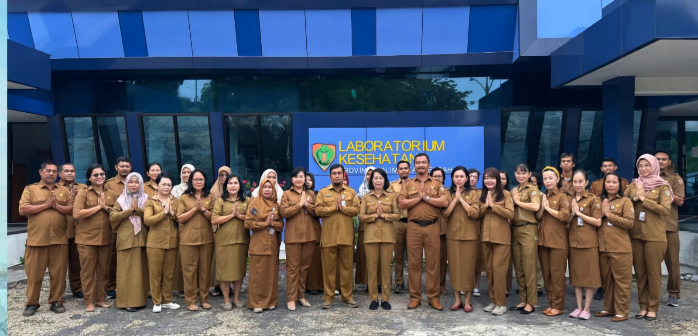

Tentang Kami

Laboratorium Kesehatan Masyarakat Tingkat 3
UPT Laboratorium Kesehatan dan Kalibrasi merupakan Instansi Pemerintah Fasilitas Pelayanan Kesehatan yang menyelenggaraan Laboratorium Kesehatan Masyarakat bertujuan untuk meningkatkan akses masyarakat terhadap layanan laboratorium kesehatan yang bermutu, mendukung surveilans penyakit dan faktor risiko kesehatan berbasis laboratorium, membangun kesiapsiagaan laboratorium kesehatan dalam menghadapi ancaman penyakit dan KLB, wabah, dan bencana.
- Laboratorium Klinik
- Laboratorium Mikrobiologi Kesehatan Masyarakat
- Laboratorium Kimia Kesehatan & Toksikologi
- Laboratorium Biomolekuler
- Laboratorium Kalibrasi
Laboratorium
Kami memiliki 5 laboratorium unggulan yang siap melayani Anda.
Informasi Lengkap Layanan
Lihat detail lengkap setiap laboratorium, jenis pemeriksaan, dan biaya di halaman layanan kami.
Testimoni
Pertanyaan yang Sering Diajukan
-
Apakah tersedia Pemeriksaan NAPZA ?
Ada, pemeriksaan NAPZA dengan 4 dan 7 Parameter tersedia di klinik kami.
-
Apakah Hasil Laboratorium dapat di terima dengan cepat ?
Ya, kami berkomitmen untuk memberikan hasil laboratorium dengan cepat dan akurat, dengan mengirimkan notifikasi hasil melalui chat WhatsApp atau email.
-
Apakah bisa periksa air minum ?
Ya, kami menyediakan layanan pemeriksaan air minum untuk memastikan kualitas dan keamanannya.
-
Apakah tersedia pemeriksaan kesehatan untuk karyawan?
Ya, kami menyediakan layanan pemeriksaan kesehatan untuk karyawan dengan berbagai paket yang dapat disesuaikan.
-
Apakah tersedia pemeriksaan kesehatan untuk anak?
Ya, kami menyediakan layanan pemeriksaan kesehatan untuk anak dengan berbagai paket yang dapat disesuaikan.
-
Apakah tersedia pemeriksaan kesehatan untuk lansia?
Ya, kami menyediakan layanan pemeriksaan kesehatan untuk lansia dengan berbagai paket yang dapat disesuaikan.
-
Bagaimana cara melacak atau mengambil hasil laboratorium?
Hasil laboratorium dapat dilacak secara online melalui halaman Tracking Hasil di situs kami, atau diambil langsung di loket pengambilan hasil pada jam operasional.
-
Apakah ada persyaratan khusus sebelum melakukan pemeriksaan?
Ya, beberapa pemeriksaan memerlukan persiapan tertentu, seperti puasa 8-12 jam untuk pemeriksaan gula darah dan kolesterol. Pastikan untuk mengikuti petunjuk dari petugas atau hasil persiapan yang tertera pada formulir pemeriksaan.
-
Bagaimana cara memesan atau booking layanan pemeriksaan?
Anda dapat memesan layanan dengan menghubungi kami melalui telepon, WhatsApp, atau email. Untuk estimasi biaya, silakan gunakan halaman Simulasi Tarif terlebih dahulu.
-
Berapa biaya atau tarif pemeriksaan laboratorium?
Tarif pemeriksaan bervariasi tergantung jenis dan parameter pemeriksaan. Untuk mengetahui estimasi biaya, silakan gunakan fitur Simulasi Tarif di situs kami.
-
Jam berapa operasional laboratorium?
Laboratorium kami buka pada hari kerja (Senin - Jumat) pukul 07.00 - 15.00 WIB. Pastikan datang sebelum jam tutup untuk pemeriksaan yang memerlukan persiapan.
Kontak
Informasi lebih lanjut dapat menghubungi kami melalui:
Alamat Kami
Jl. Letjend Soeprapto No 01, Palangkaraya, Kalimantan Tengah
Email Kami
blkkalteng@gmail.com
Hubungi Kami
0858-2418-4658